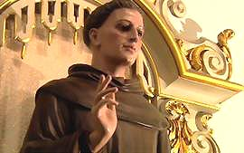
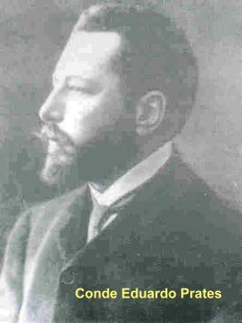
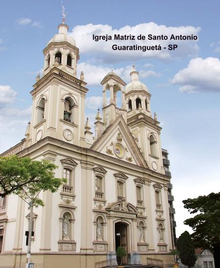
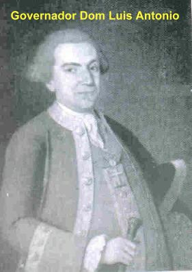
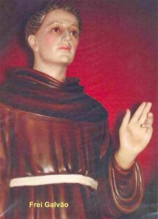
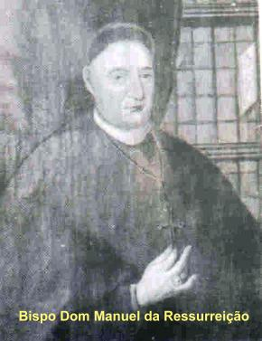

SUA OBRA E SUA
CARIDADE
A DUPLA ORFANDADE
 Ainda
atravessando a fase mais difícil de sua existência, a obra do Recolhimento da Luz
sofreu um forte impacto emocional, com a prematura morte da sua co-fundadora Madre Helena
Maria. Realmente foi um fato muito triste que Frei Galvão relatou assim: “Um ano e vinte dias esteve à fundadora na nova casa,
e foi DEUS que, servido por seus altos juízos a levou para SI, querendo que ela somente
se dispusesse do seu Divino beneplácito para tão grande obra, para logo depois lhe dar
o prêmio dos seus trabalhos e virtudes, tirando-a deste vale de misérias para o eterno
descanso. Faleceu no dia 23 de Fevereiro de 1775 e está sepultada na Capela-mor
da mesma Igreja. Dizem que ela tem feito muitos prodígios, e eu sou testemunha
de vários, porém, especialmente de um com notável admiração”.
Ainda
atravessando a fase mais difícil de sua existência, a obra do Recolhimento da Luz
sofreu um forte impacto emocional, com a prematura morte da sua co-fundadora Madre Helena
Maria. Realmente foi um fato muito triste que Frei Galvão relatou assim: “Um ano e vinte dias esteve à fundadora na nova casa,
e foi DEUS que, servido por seus altos juízos a levou para SI, querendo que ela somente
se dispusesse do seu Divino beneplácito para tão grande obra, para logo depois lhe dar
o prêmio dos seus trabalhos e virtudes, tirando-a deste vale de misérias para o eterno
descanso. Faleceu no dia 23 de Fevereiro de 1775 e está sepultada na Capela-mor
da mesma Igreja. Dizem que ela tem feito muitos prodígios, e eu sou testemunha
de vários, porém, especialmente de um com notável admiração”.
Logo após a morte
da Madre, o senhor Bispo mandou que se nomeassem três Irmãs, cada uma para as funções:
Regente, Porteira e Mestra das Noviças, o que se realizou no dia 3 de Março, Festa das
Sagradas Chagas de NOSSO SENHOR JESUS CRISTO. E assim, a Comunidade seguiu os seus
trabalhos, orações e compromissos de cada dia.
A segunda orfandade
aconteceu em Junho de 1775, no mesmo ano da morte da Madre Helena, pois nesta época
terminou o governo do estimado Dom Luis Antonio de Souza. No dia 14 tomou posse o novo
Governador Martim Lopes Lobo de Saldanha. O novo Governador cheio de vaidade e querendo
mostrar serviço, entrou por um caminho odioso, abrindo um mesquinho e calunioso
processo contra o seu antecessor enviando uma “mentirosa denúncia” ao
Vice-Rei Marquês do Lavradio, que residia no Rio de Janeiro, acusando Dom Luis
de desvios e desmandos, favorecendo de modo espantoso e ilegal as obras do
Recolhimento da Luz. E logo a seguir, com apenas quinze (15) dias no governo,
exatamente no dia 29 de Junho, Festa de São Pedro e São Paulo, expediu ordem
para o senhor Bispo fechar o pequeno Mosteiro. A perplexidade dos religiosos foi
geral e intensa, acompanhada de um abominável sofrimento interior e terrível
angústia, vendo desmoronar impiedosamente um ideal sagrado. O senhor Bispo
chamou Frei Galvão e lhe transmitiu a ordem. Aquele era um dia festivo em honra
dos Apóstolos do SENHOR, dia de Santa Missa e Comunhão. As Irmãs e o povo
esperavam na Igreja vendo as horas se escoarem rapidamente e Frei Galvão não
aparecia para a celebração. Ele chegou bastante atrasado e muito sério. Iniciou
imediatamente a Santa Missa, distribuiu a Sagrada Comunhão e consumiu as
partículas que sobraram. Mandou apagar a lâmpada vermelha do Santíssimo e avisou
ao povo que não adorassem o SENHOR no Sacrário, porque JESUS não estava lá. A
seguir mandou as Irmãs para o refeitório e depois do jantar, se reuniu com elas
na Portaria, e então, deu a triste notícia de fechamento do Mosteiro. As Irmãs
mal puderam rezar, não só pelo susto, como afogadas em caudalosas lágrimas.
Nosso Santo deu-lhes a notícia, de que o Senhor Bispo ordenou que elas avisassem
aos seus pais para virem buscá-las e levá-las para casa, pois dentro de um
mês as portas do Convento serão fechadas.
Foi um momento
crítico e cruel de tanta tristeza, quando o punhal da dor rasgou dramaticamente
todos os sentimentos e aqueles puros corações. Frei Galvão procurou consolá-las,
e depois, silenciosamente se retirou. Não falou com ninguém e nem se queixou de
nada. Nem a Irmã que narrou o acontecimento e nem os escritos antigos do Convento
descrevem qualquer tipo de reação do Frei Galvão. Apenas está registrado que a
ordem de fechamento veio do senhor Bispo, provavelmente porque julgava difícil
manter o Recolhimento, que não tinha nenhum patrimônio ou renda, e nem a aprovação
do Governador. E desta forma, como terceira orfandade, o Recolhimento também
ficou órfão de seu pai, o grande Frei Galvão.
O ex-governador
Dom Luis, que ainda se encontrava em São Paulo, soube e acompanhou todos aqueles
tristes acontecimentos, mas não tinha autoridade para interferir e nada podia fazer.
Triste e desapontado com o procedimento do novo Governador, deixou a cidade
e retornou a Portugal, sem se despedir dele.
FELIZ REENCONTRO
Todavia, aquele
Recolhimento não poderia acabar assim melancolicamente, daquele modo tão grosseiro
e
desastroso. Afinal, era uma obra solicitada por JESUS, como poderia ser abandonada? Assim
também pensaram as Irmãzinhas que haviam convivido com a falecida co-fundadora Irmã Helena, e
resolveram, heroicamente, permanecerem no Convento, tendo-se afastado apenas três
companheiras. Exteriormente o Convento permaneceu hermeticamente fechado, elas
obedeceram rigorosamente à ordem, mas interiormente a Providência Divina velava
e agia. DEUS que sempre manifestou o seu ardente e profundo Amor a aqueles que O
servem com constância, sustentou as Irmãs com Sua Graça, inclusive,
dispensando-lhes alguns preciosos milagres. Passavam fome e sede, sem
dúvida, mas eram sempre socorridas pelo SENHOR. E estas pesadas
dificuldades permaneceram durante um longo mês.
Um exemplo da ajuda
Divina. Estava o tempo muito seco por vários dias e por isso, faltou água. Como a
época era extremamente seca e penosa para as Irmãs, decidiram implorar a clemência
do SENHOR, reunindo-se no coro da Capela e rezando fervorosamente. Era um dia
claro, sem nuvens e com o céu completamente azul. Imediatamente surgiram nuvens
que cobriu toda a região, começou a trovejar e despencou um aguaceiro,
suficiente para encher todas as talhas, depósitos e demais vasilhas que havia na
casa, e logo a seguir, a chuva cessou e as nuvens foram dissipadas.
E como este, muitos
outros acontecimentos importantes, que luminosamente mostravam o carinho e a proteção
Divina, principalmente durante aquele um mês e poucos dias. Este foi o tempo suficiente
para que o vagaroso Correio pedestre trouxesse do Rio de Janeiro a resposta do
Vice-Rei, Marquês do Lavradio ao relatório que lhe foi enviado pelo novo
Governador da Capitania de São Paulo, Senhor Martim Lopes Lobo de Saldanha.
Grande foi a decepção para
o novo Governador do Estado, orgulhoso pelo seu “grande feito” (de ter mandado
fechar o Convento)! Longe de concordar com suas intrigas o Vice-Rei repudiou aquele gesto
rude e cruel do Governador contra pobres e indefesas Irmãs, censurando-o
categoricamente, mandando que fosse reaberto o Convento.
O senhor Bispo foi chamado
pelo novo Governador do Estado que o autorizou a reabrir o Convento. Imediatamente
o prelado
convocou Frei Galvão, que como é natural, ficou muito feliz com o desfecho do acontecido,
mas na verdade, ele não ignorava que um grupo de Irmãs tinha ficado no Mosteiro,
cumprindo, sobretudo, um corajoso desejo de manter vivo o ideal da Comunidade, e,
sobretudo, de atender ao pedido de JESUS. Apressadamente rumou para lá, e ansioso
bateu na porta que permanecia trancada. As Irmãzinhas ficaram assustadas, estavam
com medo de abrir, podia ser alguma outra notícia ruim! Mas logo o temor se transformou
em surpresa e alegria, ao ouvir a voz do servo de DEUS, chamando:
“Irmã Conceição, Irmã Gertrudes,
Irmã Teresa, estão ai? É Frei Galvão, não tenham medo”! Elas correram do modo que lhes permitiam a fraqueza física,
e abrindo a porta exclamaram:
“Senhor Padre”! E chorando,
prostraram-se de joelhos diante dele.
A partir de então,
empolgados com os acontecimentos e abrasados pelo Amor de DEUS, empreenderam a
construção do imponente e humilde Mosteiro da Luz, dedicado a IMACULADA CONCEIÇÃO
DE MARIA. Esta obra testemunha a genialidade e a invejável fibra do Frade Menor:
ele foi o idealizador, o desenhista, planejador, arquiteto, administrador zeloso,
pedreiro, carpinteiro e servente, que, sobretudo, saía a pé pregando pelas
cidades vizinhas e arrecadando fundos, pedras, madeiras, todas as espécies de
materiais e escravos para a construção. Foram quase cinquenta (50) anos de
trabalho intenso e dedicado.
AS DIFICULDADES DO
CONVENTO

A Lei Pombal aumentou
as dificuldades, porque ela impedia a construção e abertura de novos Conventos e Mosteiros,
e condenava a morte aqueles existentes. E assim, também por esta razão, o Governo do Estado,
apesar do “puxão de orelha” dado pelo Vice-Rei, procurava colocar obstáculos às
obras do Mosteiro, não concordando com as obras de ampliação ou do novo Mosteiro
da Luz.
Então foi necessária
uma união de esforços, buscando não ferir o interesse e a ordem da Coroa Portuguesa.
E assim, com muito jeito, foram conseguindo a necessária autorização, apresentando argumentos
que contornavam a dificuldade. Então disseram: era um Recolhimento de mulheres desejosas
de solidão, para se aprofundarem na oração e na penitência, sem o compromisso de
fazerem os Votos Perpétuos. Estes argumentos eram apresentados para as
autoridades do Governo, mostrando deste modo, que o Recolhimento da Luz não
estava desrespeitando a Lei do Marquês de Pombal.
Mas evidentemente, aqui cabe esclarecer, que a Ordem
Religiosa fundada por Frei Galvão, somente era fictícia no papel, para
satisfazer as autoridades do Governo, porque na realidade, desde o inicio,
como vimos acima, as Irmãs cumpriam uma rigorosa e austera disciplina,
dedicando-se intensamente ao trabalho e as orações. Quanto à
modalidade de vida, ou seja, a espiritualidade escolhida foi a Regra da Ordem
Concepcionista, fundada em 1484, em Toledo, na Espanha, pela portuguesa Santa
Beatriz da Silva. Hoje, a Ordem Religiosa está juridicamente associada à
Primeira Ordem de São Francisco, com presença marcante no Brasil e no mundo.
Por outro lado, enquanto
Frei Galvão empenhava a sua alma naquela luta, ele via recrudescer a perseguição à
Igreja, com o fechamento de Conventos e vendo em agonia a sua própria Província
Franciscana da Conceição. Mas heroicamente continuava lutando para manter o seu
Mosteiro, ensejando as Irmãs a cumprirem a missão que o SENHOR havia determinado,
e para a sua própria alegria pessoal pela concretização do ideal projetado.
Na construção do prédio,
por um natural senso pedagógico, Frei Galvão não quis mais do que entre vinte (20) a
trinta (30) religiosas ocupando o prédio. Por isso, construiu o necessário para esta
utilização, com esta capacidade, e não mais. Todavia, ao longo dos anos, com o aumento
das vocações, posteriormente foi edificada a ala Prates, construída pelo Conde Eduardo
Prates, grande devoto de Frei Galvão e notável benfeitor do Mosteiro da Luz.
AS IRMÃS
Frei Galvão tomou a Bíblia
como fonte de inspiração para formar e instruir as Irmãs, ele mesmo, que
praticava como
poucos a Regra de São Francisco de Assis, que estimula, sobretudo, os franciscanos a
viverem, se amando e se servindo mutuamente como irmãos, numa verdadeira
fraternidade eminentemente pobre, servidora, obediente, na alegria da Paz do
SENHOR. Assim, Frei Galvão atuava como autêntico mestre daquele ideal de vida
religiosa sonhado pelas Irmãs.
Os frutos nos revelam
a pureza e a força da árvore. A história do Mosteiro da Luz está aberta para quem quiser
conferir. Basta lembrar que os contemporâneos o apelidaram de “viveiro de
Santas”, em face da quantidade notável de espíritos dedicados, fieis e
verdadeiramente santos que se formaram e habitaram aquela casa.
Depois da morte de Frei
Galvão, a Providência Divina atuou e o Mosteiro galhardamente foi atravessando os anos,
prestando benefícios incontáveis a Comunidade Cristã. O sucessor escolhido pelo Bispo
foi o capelão Frei Lucas José da Purificação, franciscano trabalhador e
minuciosamente responsável em todas as obrigações e serviços na Comunidade
Religiosa.
Cento e cinquenta e cinco
(155) anos mais tarde, a esclarecida e virtuosíssima Madre Oliva Maria de Jesus, apoiada
pelo senhor Arcebispo Dom Duarte Leopoldo e Silva agilizou providências e conseguiu
incorporar o Convento à Ordem Concepcionista. Deste modo elevou-o de simples
Recolhimento a Mosteiro Pontifício, com votos solenes e observância da Regra
própria da Ordem, a que anteriormente pertenciam por “devoção e determinação”
do Bispo Dom Manuel da Ressurreição.
A CONSTRUÇÃO DO NOVO
MOSTEIRO (O MOSTEIRO DA LUZ)
Frei Galvão realizou
a obra com dois objetivos: provendo-a de higiene e solidez. Quanto ao primeiro,
considerando a vida enclausurada das Irmãs, desejava que elas vivessem enclausuradas
sim, mas oprimidas não. Quis proporcionar-lhes o necessário espaço, com ar e luz. E
quanto à solidez, desejou fazer uma construção definitiva a fim de não deixar
preocupações para o futuro, como por exemplo: obras de acabamento, a fim de não incomodar as religiosas
na clausura.
Como não tinha renda
e nem doações vultosas para as obras, Frei Galvão e as Irmãs recebiam as esmolas e a boa
vontade dos cristãos. Por essa razão, ele teve que sair, visitando cidades, pregando em
Igrejas, visitando casas de pessoas de posse, pregando o evangelho, ensinando a
Lei do Amor Divino, conseguindo recursos financeiros, materiais e doações
preciosas para a sua obra.
Por vezes, era tão numeroso
o auditório, que sendo pequeno o recinto da Igreja, pregava ao ar livre, como aconteceu
em São Luiz do Paraitinga.
Com quatorze anos de intenso
trabalho, uma parte do prédio se mostrava em condições de alojar as recolhidas, passando do
velho conventinho para a nova casa no dia 25 de Março de 1788, Festa da
Anunciação de NOSSA SENHORA.
Muito longe, porém, estava
o final da obra que durou nada menos do que 48 anos, pois quando Frei Galvão morreu em 1822,
faltava terminar a torre.
REGULAMENTO E ORGANIZAÇÃO
Estando as Irmãs alojadas
com maior comodidade, o seu Santo fundador deu-lhes os primeiros estatutos ou regulamentos
para a vida religiosa, por ele mesmo elaborado. Em linguagem simples e concisa, traçou-lhes
diretivas de grande sabedoria e prudência, e nelas revela o seu espírito
altamente psicológico: com energia, firmeza, sábia e caridosa condescendência
com a fragilidade humana, conseguiu assegurar a vitalidade espiritual de seu
Convento.
Estes estatutos foram aprovados
por Dom Mateus de Abreu Pereira, e observados até 1880. Em 1865, o Bispo Dom Antonio Joaquim
de Melo, acrescentou algumas novas determinações, exigidas pelas condições da
Comunidade.
A Comunidade foi sempre
numerosa e florescente, apesar de todas as dificuldades e vicissitudes que passou.
Finalmente em 1929, com o apoio do Arcebispo Dom Duarte Leopoldo e Silva intercedendo
junto a Santa Sé, conseguiu Madre Oliva Maria de Jesus, a incorporação do Convento
à Ordem Concepcionista, completando deste modo a obra de Frei Galvão e a idéia do
Bispo Dom Manuel da Ressurreição.
O Mosteiro da Luz foi
registrado e tombado pelo Departamento do Patrimônio Histórico e Artístico Nacional, no
dia 16 de Agosto de 1943. Em consequência, ficou sob
a fiscalização
do mencionado departamento, de modo que sua integridade se acha perpetuamente
assegurada.
PRISIONEIRO DA CARIDADE
Dos três primeiros ofícios
que Frei Galvão recebeu logo após a conclusão de seus estudos: de Pregador, Confessor
e Porteiro, por volta de 1776 teve que deixar o de Porteiro, porque não podia
permanecer parado na Portaria, era uma condição incompatível com a realização de todos os
outros importantes trabalhos, porque ele viajava com frequência e, sobretudo,
estava sempre orientando e ajudando na construção do Recolhimento.
Isto, além de ser
o Diretor do Recolhimento da Luz, e também ser Comissário da Ordem Terceira em São Paulo,
onde realizou um notável trabalho. Outro honroso ofício que Frei Galvão recebeu de
seus superiores, foi o de Visitador, delegado pelo Ministro Provincial, que era um
encargo difícil e delicado, o que testemunha o elevado índice de consideração e
confiança que gozava em sua Ordem.
Em 1780 o novo Governador
de São Paulo Martim Lopes, exorbitando a sua autoridade, condenou a morte de forca o
soldado Caetano José da Costa, vulgo Caetaninho, pelo “crime” de ter ferido
levemente o seu filho, esbofeteando-o, estando os dois, o filho e Caetaninho totalmente
embriagados. Foi uma discussão vulgar e briga de bêbados. Embora havendo grande resistência
da Câmara Municipal, do Bispo Dom Frei Manuel da Ressurreição, de particulares e
eclesiásticos, inclusive do próprio Frei Galvão, apesar de todos os protestos, o
Governador não cedeu, e o pobre Caetaninho foi executado.

No tempo
colonial também era comum aplicar a pena de degredo. Uma pessoa criticada, ou que tivesse
aprontado algo, ou que caísse na antipatia das autoridades, ou fosse condenada por alguma
infração, era degredada, isto é, era mandada para outro lugar, outro Estado ou
cidade.
Isto aconteceu com Frei
Galvão, sua culpa foi ter tomado o partido dos fracos, no caso presente, ter manifestado
a favor do Caetaninho. O Governador que já não simpatizava com ele, quis descarregar no
religioso sua raiva, como se Frei Galvão fosse o culpado pelo desapontamento e
revolta da cidade inteira contra o gesto arbitrário e covarde da autoridade
maior da Capitania. E a sentença do Governador contra Frei Galvão foi
fulminante: deixar São Paulo em 24 horas.
Recebendo a ordem
do Governador, obediente e honesto, imediatamente começou a fazer os preparativos para
viajar. A ordem é injusta e covarde,
dizem-lhe os monges beneditinos.
Ele responde: Sou franciscano e vou
obedecendo.E as Irmãs? Irá
abandoná-las? Deixará a obra de DEUS incompleta? Com a fisionomia triste e séria, ele continuava
movimentando os seus preparativos para a viagem. Nada era capaz de
detê-lo.
Obediência cega!
Seu espírito estava nas mãos de DEUS e embora com o coração sangrando, iniciou a
caminhada para o seu desterro. Provavelmente estivesse pensando:
"Se o SENHOR está permitindo,
é porque ELE conhece as razões e sabe o que é melhor".
Já havia alcançado
o Bairro do Braz quando interiormente sentiu que devia escrever algumas linhas
as Irmãs. Entrou numa casa, pediu papel e tinta e escreveu:
“Madre Regente
e todas as Irmãs do Recolhimento da Conceição:
Ao SENHOR DEUS em quem só devemos esperar. Tenham paciência, filhas, agora é a ocasião
de Vossas Caridades terem sofrimento. Tenham animo pelo amor de DEUS. Tenham paciência
pelo amor de DEUS. Vivam unidas. Vivam unidas. Vivam unidas. Guardem a glória de NOSSO
SENHOR vivendo na sua providência esperando somente NELE. Filhas vivam unidas, vivam
unidas”...
(O bilhete tem diversas
outras frases de despedida)
Pediu ao dono da casa
que mandasse um escravo de confiança, levar o bilhete ao Convento da Luz.
Nesse meio tempo, a notícia
de seu desterro se propagou velozmente pela cidade e, todos se estremeceram com aquela novidade
assustadora. Diziam: “Vamos perder o nosso Santo”?
Em pouco tempo, homens embuçados,
seguidos de robustos escravos armados cercaram a residência do Governador. Formou-se logo
uma multidão exigindo que ele revogasse a sentença do desterro de Frei Galvão.
Já era noite e exposto a aquele povo ameaçador, não teve outro remédio senão
capitular. Com grande má vontade revogou a perversa sentença:
“Que o Frade fique na cidade”!
Rapidamente foram atrás
do Santo e o trouxeram de volta. A notícia se espalhou e encontrou as Irmãs chorando e rezando
diante do Sacrário, suplicando a misericórdia de DEUS. Elas já tinham recebido a carta que
Frei Galvão lhes escrevera. Agora, com o coração cheio de alegria, permaneceram
rezando, agradecendo a NOSSO SENHOR.
No mesmo ano, por ordem da
Rainha de Portugal, D. Maria I, o Governador Martim Lopes foi exonerado e veio outro Governador
para administrar a Capitania de São Paulo.
Neste mesmo ano de 1781, surgiu
novo perigo que ameaçou a Capitania de São Paulo de perder o seu Santo Frei Galvão. Ele foi
nomeado pelos seus superiores Vigário e Mestre dos Noviços do Convento de
Macacu, perto do Rio de Janeiro, aonde ele mesmo, fizera o seu Noviciado. Mas o
Bispo da Capitania de São Paulo, Dom Frei Manuel da Ressurreição, não deixou,
usando de todas as suas prerrogativas, conforme a lei eclesiástica.
Como se vê, não somente
o povo apreciava Frei Galvão, mas também as autoridades religiosas e civis. Sem dúvida,
parece que estava nos desígnios de DEUS a permanência de seu Servo em São Paulo, onde
sua presença era muito mais útil do que em Macacu.
O fato de não ter podido
cumprir a ordem de ir para Macacu, não impediu, todavia, que seus
superiores
reconhecendo as suas reais virtudes lhe concedessem em 1796 o privilégio de uma
Presidência e Guardiania, ou seja, ser Superior de um Convento. E isto aconteceu de
fato dois anos depois, em 1798, quando foi eleito Guardião do Convento de São Francisco
em São Paulo, onde residia.
Agora, quem ficou
assustada foram as Irmãs do Convento da Luz, pois entenderam que pelas obrigações
do novo cargo, Frei Galvão já não poderia atendê-las mais, e então, seria substituído
por outro sacerdote na Direção do Recolhimento. Isto elas não queriam. Por isso,
ficaram desorientadas, pensando em dificuldades de todas as espécies, considerando
que ele não era só o Superior do Mosteiro da Luz, mas também o Mestre e o Ecônomo,
afastando as Irmãs de toda a comunicação com o exterior. Por outro lado, sendo ele
Superior dos Franciscanos teria que viajar para o Rio de Janeiro e participar do
Capítulo da Ordem, permanecendo lá, muitos meses. E elas, as Irmãs, iam ficar
sozinhas?
Então, as Irmãs aproveitando
as boas graças que gozavam junto a Câmara Municipal e com o novo Bispo da Capitania Dom
Mateus de Abreu Pereira, que substituiu Frei Manuel da Ressurreição, suplicou-lhes que
enviassem carta ao Provincial dos Franciscanos para não tirar Frei Galvão da
Direção do Mosteiro da Luz.
O Bispo e a Câmara atenderam
as Irmãs e enviaram preciosas missivas ao Provincial Franciscano. Duas cartas que
evidenciavam todo o valor, a dignidade e admirável capacidade administrativa do
Santo, mostrando o quanto ele era útil as Irmãs e a própria obra do
Recolhimento.
Se a dificuldade residia
na permanência de Frei Galvão em São Paulo e na Direção do Convento da Luz, a tudo concordou
o Ministro Provincial Franciscano Frei Joaquim de Jesus e Maria, sem, contudo exonerá-lo da
Guardiania, ou seja, dele ser também o Superior do Convento Franciscano em São
Paulo. Assim, ficaram todos contentes, e o nosso Santo com mais um cargo,
sobrecarregado de dificuldades e responsabilidades. Ficou superior de dois
Conventos, um de Frades e outro de Freiras. Era uma missão extremamente penosa,
porque além de lhe consumir integralmente os seus dias, provavelmente não
sobrariam horas para realizar todo o trabalho nos dois Conventos.
Aproximando-se o Capítulo
Provincial no dia 28 de Setembro de 1799, Frei Galvão seguiu, na qualidade de capitular,
para o Rio de Janeiro, donde voltou exonerado do ofício de Guardião (porque realmente
não era possível ser Diretor de dois Conventos, além dos seus inúmeros afazeres).
Foi substituído por Frei Miguel de Jesus Maria Carneiro. Outra vez em 28 de
Março de 1801 teve os votos para Guardião e novamente teve que viajar até o Rio
de Janeiro para votar no Capítulo de 2 de Outubro de 1802. Pelas mesmas razões
foi exonerado.
Em todas as viagens,
sempre fazia a pé, celebrando a Santa Missa e pregando nas cidades e vilas por onde
passava, a pedido dos respectivos párocos locais. E como é lógico, tinha de passar
por Guaratinguetá, sua terra natal, que está bem ao lado da estrada que liga São Paulo
ao Rio de Janeiro. E com que entusiasmo e amizade os seus familiares, parentes e amigos
e o povo em geral o recebiam! E isto, a humildade dele o deixava “sem jeito”
e pouco tranquilo, por isso resolveu fugir deles, ultimamente passava por Guaratinguetá,
mas não entrava na cidade. Quando sabiam que ele estava pela redondeza e o
procuravam, não o encontravam mais, porque Frei Galvão já estava longe. Assim,
fugia das honras e glórias do mundo, considerando-as como nada, totalmente
supérfluas.
O Santo ainda exerceu
outros cargos importantes na sua Congregação, além dos dois períodos mencionados de
Guardiania: foi eleito Definidor, isto é, Conselheiro do Ministro Provincial em 9 de Abril
de 1802. Em 10 de Outubro de 1804 o encontramos no Convento Santa Clara, em Taubaté, como
Visitador Delegado pelo Provincial, e no dia 29 do mesmo mês, em Itu, cumprindo
igual ofício no Convento de São Luis de Tolosa. Em 1807, foi constituído
Visitador Geral e Presidente do Capítulo, porém não lhe foi possível desempenhar
este cargo, já estava com 69 para 70 anos de idade. Dizem os documentos que
renunciou a este ofício por motivo de falta de saúde.

 Próxima Página
Próxima Página
Página Anterior
Retorna ao Índice